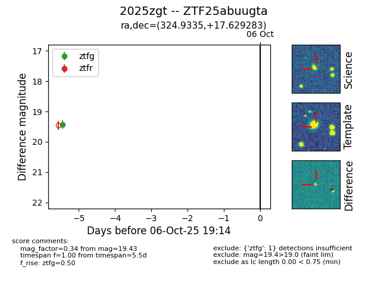

FINK: ZTF25abuugta
Lasair: ZTF25abuugta
ALeRCE: ZTF25abuugta
TNS: 2025zgt
YSE: 2025zgt
ZTF25abuugta (ztf,fink)
2025zgt (tns,yse)
equatorial (ra, dec) = (324.9335,+17.62928)
galactic (l, b) = (71.3342,-25.48447)

last ztfg=19.43
1 ztfg detections